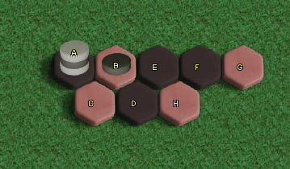

|
La Planchette Japonaise
(Японский спуск)
Это самая известная разрушительная
форма, с бесконечно повторяющейся последовательностью ходов
где у одного игрока есть один "свободный ход" на каждом цикле.
За ходом белых следует цикл из 6 ходов, приводящий к такому же
положению. На третьм ходе чёрные должны сходить "куда-нибудь".
Если чёрные будут внимательны и не дадут белым разорвать цикл,
то результат будет разрушительным.
|